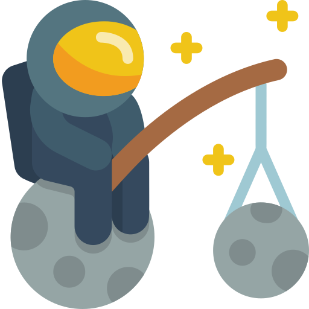

<router-outlet></router-outlet>
<app-welcome-animation *ngIf="showingWelcome" (click)="accessApp()"></app-welcome-animation>
<app-video-player *ngIf="showingVideo" (closeEvent)="stopVideo()"></app-video-player>

<div class="app-wrapper">
    <div class="stars" [ngStyle]="{'box-shadow': small}"></div>
    <div class="stars2" [ngStyle]="{'box-shadow': medium}"></div>
    <div class="stars3" [ngStyle]="{'box-shadow':big}"></div>

    <!-- Header -->
    <div class="top-indicators">
        <div class="logo-container"></div>
        <!-- Speech detected -->
        <p class="speech-detected">{{ lastRecognition }}</p>
        <!-- Counter -->
        <div class="counter-wrapper">
            
            <p class="classification-count">{{ classificationCount }}</p>
        </div>
        <!-- Micro status -->
        <div [ngClass]="{'micro-on': voiceRecognitionService.isStoppedSpeechRecog === false, 'micro-off': voiceRecognitionService.isStoppedSpeechRecog === true}" class="micro-status" title="Estado del micrófono">
            <fa-icon [icon]="faMicro" style="font-size: 20px !important;"></fa-icon>
        </div>
        <!-- Repeat last -->
        <div class="repeat-last" title="Repetir sonido" style="padding: 10px 15px 14px 9px !important;" (click)="playLastMeteorSound()">
            <fa-icon [icon]="faRepeat" style="font-size: 20px !important;"></fa-icon>
        </div>
        <!-- Tutorial quick access -->
        <div class="tutorial-btn" title="Ver tutorial" (click)="playVideo()">
            <fa-icon [icon]="faQuestion" style="font-size: 20px !important;"></fa-icon>
        </div>
    </div>
    <div id="meteor">
        
    </div>

    <!-- Meteor images -->
    <div class="meteor-graph"></div>
    
    <!-- Companion-->
    <div>
        
    </div>

    <!-- Other nimations -->
    <div *ngIf="classificationCount==1 || classificationCount>1">
        
    </div>
    <div *ngIf="classificationCount==5 || classificationCount>5">
        
    </div>
    <div *ngIf="classificationCount==10 || classificationCount>10">
        
    </div>
    <div *ngIf="classificationCount==15 || classificationCount>15">
        
    </div>
    <div *ngIf="classificationCount==20 || classificationCount>20">
        
    </div>

    <!-- Earth -->
    <div id="earth">
        
    </div>

    <!-- Conversation turn indicator -->
    <div id="turn-indicator">
        <div class="turn-indicator-container">
            
            
        </div>
    </div>
    <div id="footer">Icons made by <a href="https://www.flaticon.com/authors/itim2101" title="itim2101">itim2101</a>, <a href="https://www.flaticon.es/autores/smashicons" title="Smashicons">Smashicons</a>, <a href="https://www.flaticon.com/authors/good-ware" title="Good Ware">Good Ware</a>, <a href="https://www.flaticon.es/autores/srip" title="srip">srip</a> and <a href="https://www.flaticon.es/autores/vectors-market" title="Vectors Market">Vectors Market</a>  from <a href="https://www.flaticon.com/" title="Flaticon">www.flaticon.com</a></div>
</div>

